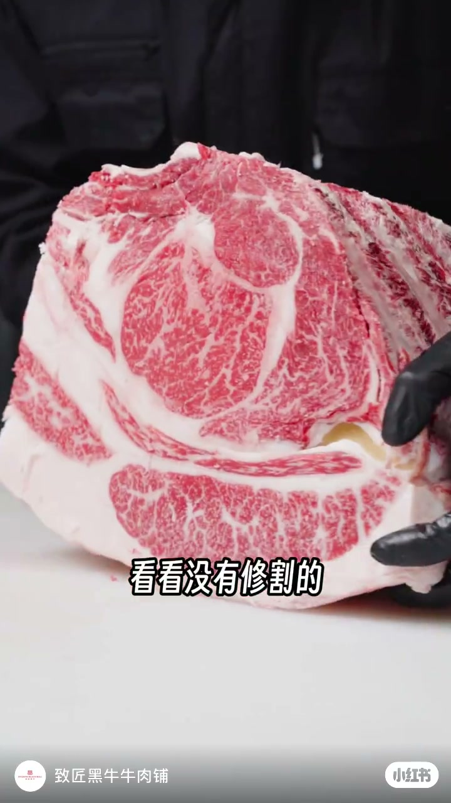
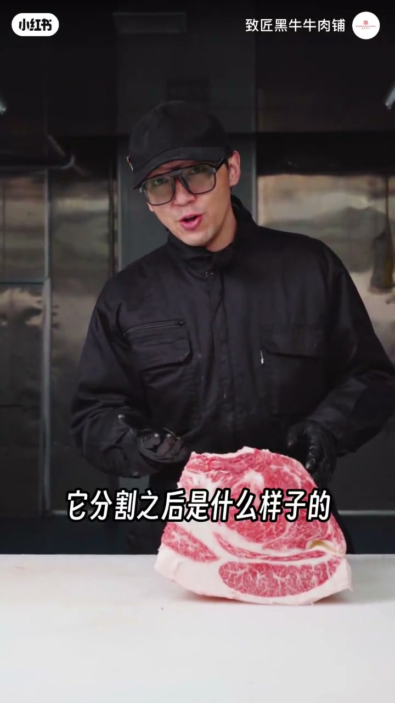
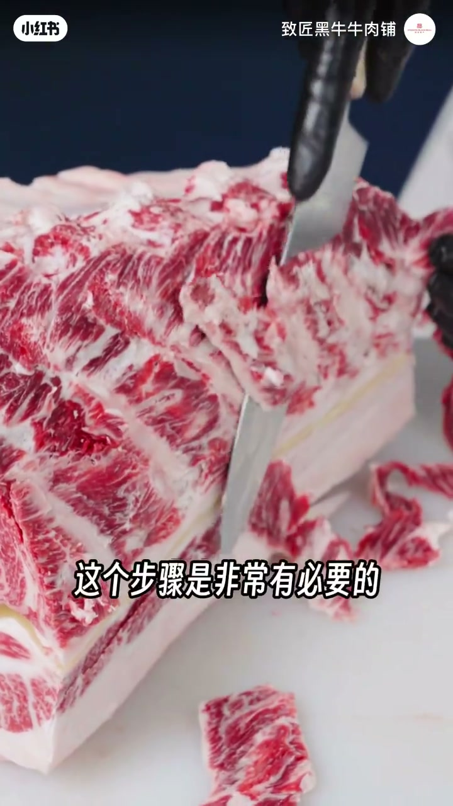
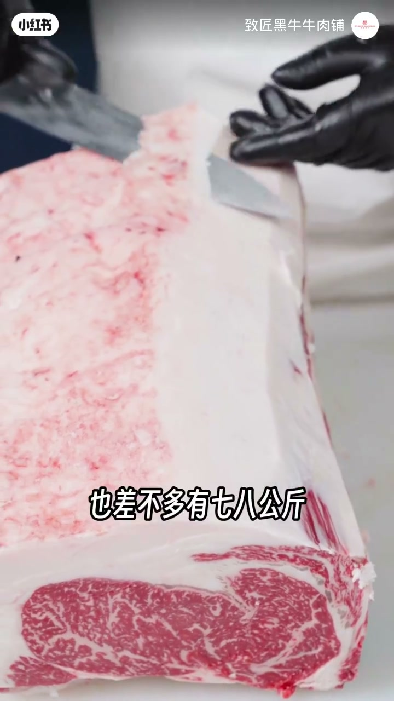
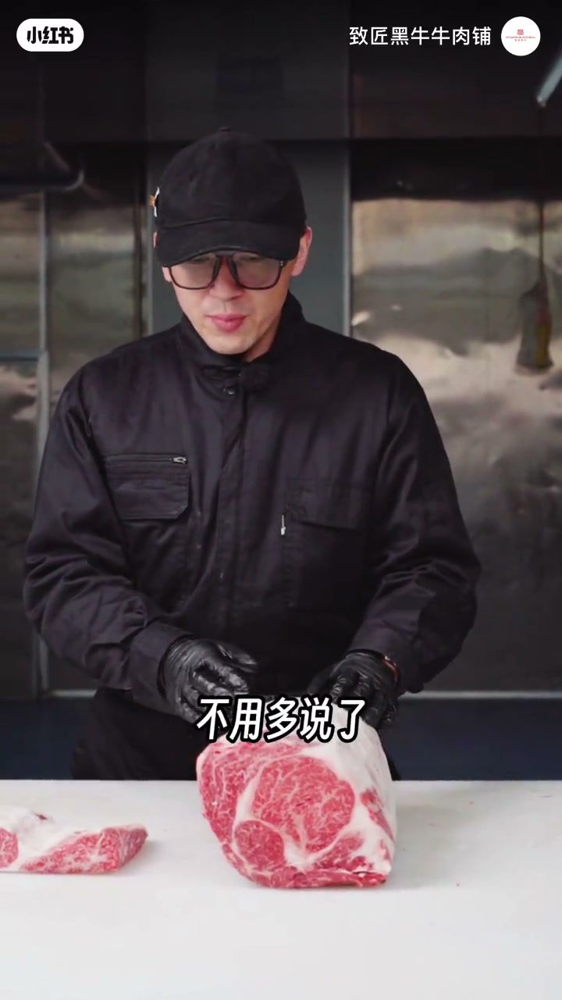
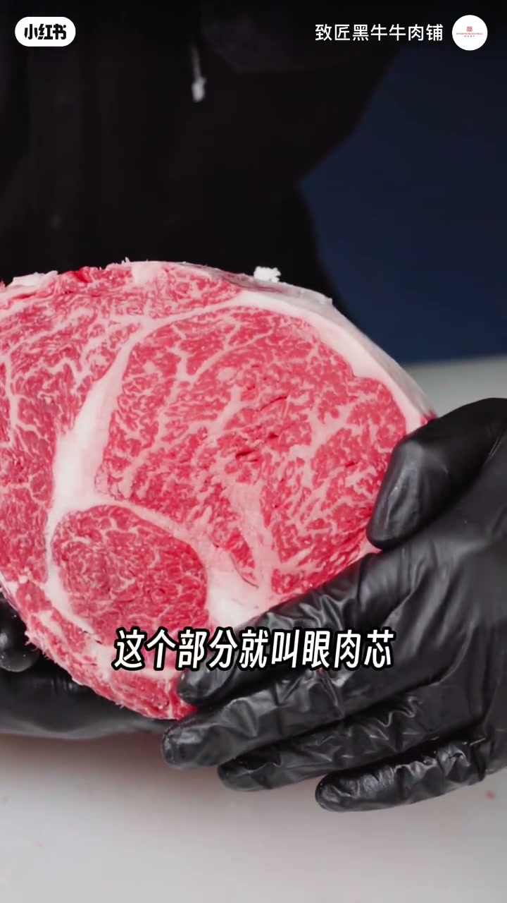

内容要点
致匠黑牛拆解国产和牛眼肉精修：先去侧面软骨与肋骨筋膜，再去外膘油；排酸72小时以上会让肉偏硬、表面出现腊化壳。未修一条可超十公斤，修后约七八公斤。收尾用遮挡对比讲清：眼肉、眼肉芯、眼肉盖其实是同一部位的不同分法。
知识结构
未修眼前肉相邻；去掉一部分后留下眼肉芯，先看分割后样子。
第一步去侧面软骨；国产和牛排酸72小时以上，表面可有腊化壳，为了口感更好。
去肋骨表面筋膜（澳牛眼肉芯常直接去掉此部位）；再去外膘油。
未修约10公斤以上，修后约七八公斤；油脂越白越好是日本判定标准之一。
眼肉去掉霉边部分后可称眼肉芯；眼肉/芯/盖是分法不同，不是三种无关部位。
买眼肉先问清你买的是整条眼肉、眼肉芯还是带盖：名字不同常常只是分割边界不同；排酸腊化壳与厚外膘都是精修成本，不是「坏了」。
00:00-00:42未修眼肉长什么样，芯是怎么留出来的
开场：「看看没有修割的眼肉是什么样的。」分割前它是挨着的关系；「然后去掉这个部分，只留下这儿一个部分，这就叫眼肉芯」。作者预告接下来看分割之后的样子——先建立空间关系，再进入刀法。


00:42-01:26软骨、排酸壳、筋膜与外膘油
第一步去掉侧面的软骨。国产和牛基本排酸72小时以上，「所以肉偏硬，表面会出现一些腊化的壳」；排酸是为了让口感更好，这一步非常有必要。然后去掉肋骨表面的筋膜——作者提到澳洲的眼肉芯往往没有这个部位、直接被去掉。下一步是去外膘油。
量级感：没有修割的一条眼肉大概有10公斤以上，修割下来之后也差不多有七八公斤。和牛油脂丰富，「我们可以从油脂的白色度判别这头牛到底好不好」；日本判定标准之一就是油脂颜色，油脂越白越好。


02:52-03:13眼肉、眼肉芯、眼肉盖：分法不同
收尾对照牛排认知：「眼肉呢是和牛排这个是公认的，不用多说了。」他指出去掉前面「霉」的部分，再把某一侧遮掉，剩下就叫眼肉芯——「其实它是一个部位，只是分个方式不同」。所以「这下大家知道眼肉、眼肉芯和眼肉盖的关系了」。
中段约01:51有一句「这个修下来的板筋会出现在」被截断，不展开猜测去向。


完整转录（18段）
以下文本由 Whisper medium 模型自动转录，可能存在少量识别误差，已尽可能修正。
看看没有修割的眼肉是什么样的
没有分割之前 它是挨着的关系
然后去掉这个部分 只留下这儿一个部分
这就叫眼肉芯 我们这回看一下它分割之后是什么样子的
眼肉分割的第一步是去掉侧面的软骨
国产和牛基本排酸72小时以上 所以肉偏硬 表面会出现一些腊化的壳
排酸的效果是为了让口感更好 所以这个步骤是非常有必要的
然后是去掉肋骨表面的筋膜
这个步骤是让口感更好 像澳洲的眼肉芯是没有这个部位的 直接被去掉了 下一步是去外标油
没有修割的一条眼肉大概有10公斤以上的样子 修割下来之后也差不多有七八公斤
和牛的特性就是油脂丰富 我们可以从油脂的白色度判辨这头牛到底好不好
日本对和牛好坏的判定标准之一就是油脂的颜色 油脂越白牛
这个修下来的板筋会出现在,
去油就是这么一个步骤
眼肉呢是和牛排这个是公认的 不用多说了 然后呢 我们可以看一下
这个叫眼肉 刚才说了去掉前面这个霉的部分
我把这里遮掉 这个部分就叫眼肉芯 其实它是一个部位 只是分个方式不同
所以兄弟们 这下大家知道眼肉 眼肉芯和眼肉盖的关系了